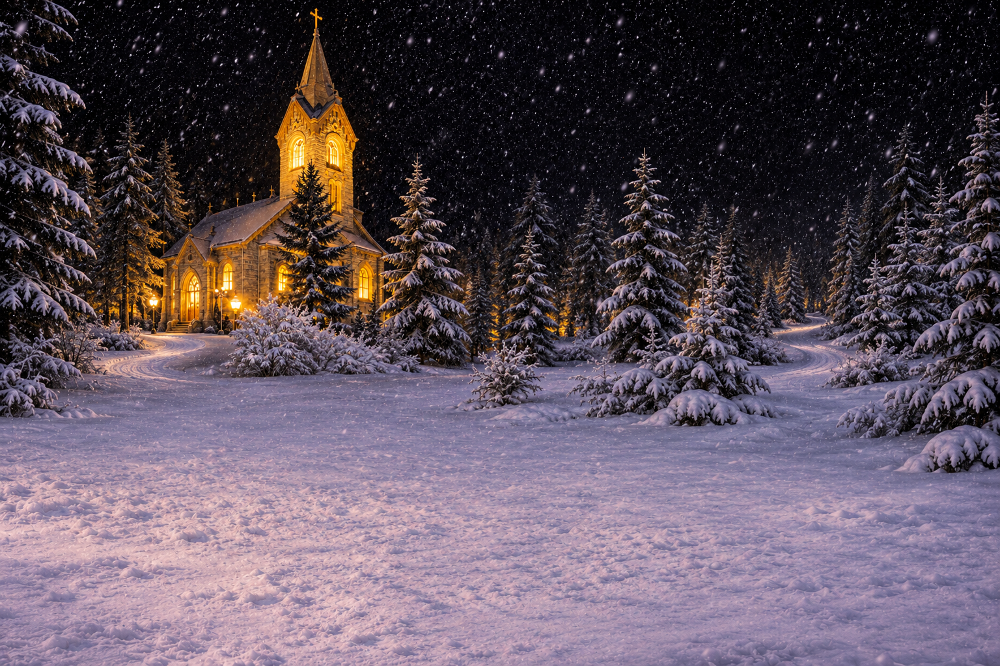
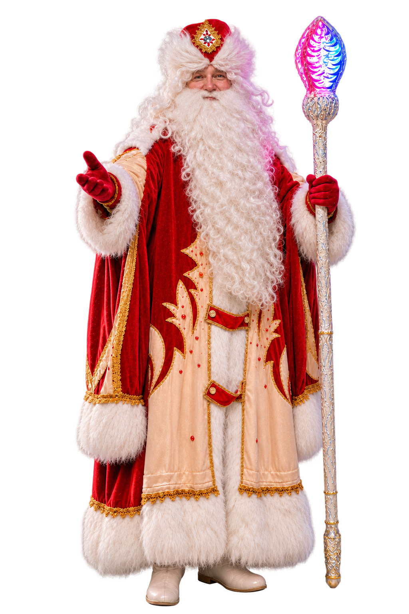

PAKKASUKKO · ТЕСТ 3D
Внутри зимней сказки
Дед Мороз словно поворачивается вокруг точки под сапогами: ноги устойчивы, а голова, плечи и зимний лес меняют ракурс при движении.



Загружаем Деда Мороза и зимний фон…
Проведите по фотографии пальцем или мышью. Для эффекта от наклона телефона нажмите «Движение iPhone» и разрешите доступ к датчику. Кнопка «Автопоказ» показывает движение без датчика.
Как устроено: персонаж с посохом вырезан из фотографии; пространство за ним восстановлено, чтобы при движении фон оставался цельным. Точка опоры закреплена под сапогами. Персонаж поворачивается как цельная фигура, а задний план меняет перспективу; движение фона постепенно исчезает у земли. Это тестовый эффект глубины, а не полноценная 3D-модель или технология Apple. Основной сайт не изменён.